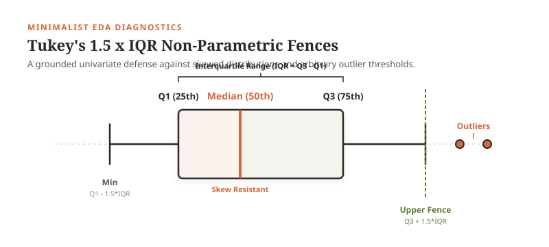

The Minimalist EDA Guide: How Inspecting One Feature at a Time Cured My "Dataset-Hopping" Panic
"Before DS311, I would jump straight into multivariate models, panic the moment missing values appeared, and constantly abandon datasets. Here is how learning simple univariate and bivariate inspection transformed the way I work with data."
The Foolproof 1-Bowl EDA Method
A calm, approachable step-by-step framework to stop dataset-hopping, diagnose missingness with confidence, and build rock-solid statistical intuition before writing complex models.
Essential Ingredients
- 1 Messy Tabular Dataset: Any real-world CSV with quirks, nulls, or extreme numbers.
- 1 Univariate 5-Number Summary: Median, Q1, Q3, Min, Max — we leave the mean aside for now!
- 1 Tukey Boxplot & KDE Curve: To diagnose skewness and extreme observations.
- 1 Bivariate Scatter Plot: To see the actual shape before calculating Pearson's r.
- A Healthy Dash of Skepticism: Asking: Why is this value missing? before blindly imputing.
Core Instructions
Follow the step-by-step narrative below. Resist the temptation to jump straight into multivariate algorithms or automatic imputation scripts!
CHAPTER 01 The Confession: My Backward Workflow
I have a confession to make. Before diving deeper into Data Science and taking this Exploratory Data Analysis (EDA) course alongside Data Mining & Applications (DMA), my workflow was completely backwards.
Whenever I was handed a dataset, what did I do? I went straight into high-level cleaning scripts and multivariate analysis. I would treat the dataset as one gigantic, monolithic black box: immediately trying to train a model, run clustering, or build fancy multi-axis charts.
I paid little to no attention to inspecting the individual features on their own. I didn't stop to examine what a single column looked like, how it was distributed, or why it had peculiar bounds. I only cared about the end task.
Imagine trying to bake a delicate sourdough bread by dumping flour, salt, yeast, and water into a mixer all at once, cranking it to maximum speed, and hoping for the best — without ever checking if your yeast is alive, whether your flour is bleached, or how much moisture is in the room. That was exactly how I was approaching data science.
The result? Complete confusion. And quite frankly, I wasted hours upon hours of precious time.
CHAPTER 02 The DATAVIS Nightmare & "Dataset-Hopping"
A glaring example of this chaos happened during our earlier DATAVIS course.
In DATAVIS, our job was to curate compelling datasets and communicate visual stories. But because I didn't know how to audit data at the individual feature level, curating datasets felt like an impossible, frustrating battle.
Every single time I loaded a dataset and hit a roadblock — such as unexpected missing values, strange zeros, or extreme spikes — I would panic. I would tell myself:
"This dataset is broken. It is too messy. Let me just find another one on Kaggle that is already clean."
I fell into the habit of "dataset-hopping": switching from dataset to dataset, discarding days of effort the second I hit a roadblock.
assets/images/screenshots/datavis_chaos.png and embed it here!
Sure, I had textbook knowledge of "imputations." I knew the words: mean imputation, median imputation, forward fill. But here was the honest truth: I had little to no idea which imputation I should actually do, why I should do it, or what damage it would cause to the data.
I was treating imputation like a magic eraser — a quick command to make missing values disappear so I could move on. I didn't realize that blindly filling missing values with the column mean was distorting variance, fabricating artificial relationships, and lying to my audience.
CHAPTER 03 The Univariate Breakthrough: Loving One Column at a Time
The turning point in DS311 came when our instructor walked us through Topic 01 (Introduction to EDA) and Topic 05 (Univariate Analysis).
For the first time, I learned that before you ever pair two variables together, and before you ever touch a multivariate model, you must conduct a simple, honest Univariate Triage. You must get to know each feature in isolation:

Once I started inspecting features one by one, the panic evaporated. Missing values were no longer a reason to abandon a dataset; they were simply a puzzle piece to document, justify, and handle thoughtfully.
CHAPTER 04 Bivariate Analysis: Why Relationships Lie
Once individual features are understood, we move to the heart of exploratory modeling: Topic 06: Bivariate Analysis.
In class, we learned that pairing two continuous variables (X and Y) is where the biggest statistical traps lie. A single number — like Pearson’s correlation coefficient (r) — can trick you into believing a clean linear relationship exists when reality is completely different.
Think of Anscombe’s Quartet: four datasets with the exact same correlation (r = 0.816) and the exact same linear regression line (Y = 3.0 + 0.5X), yet one is a clean line, one is a curved parabola, one has an outlier, and one is held hostage by a single extreme leverage point!
In our Lab 04 NYC Taxi Trip investigation, we saw this first-hand: when plotting trip distance against fare amount, faulty GPS recordings of 0 miles for $50 flat fares or 150 miles for a $10 fare would have dragged the entire regression slope down if we hadn't examined the scatter plot first.
CHAPTER 05 Interactive Lab: See the Leverage Yourself
To demonstrate how sensitive bivariate regression is to rogue observations, I built this friendly 2D regression canvas. Click anywhere inside the canvas to add data points, or toggle the presets to see how a single leverage point can hijack the entire regression line:
Notice what happens with the "Leverage Outlier" preset: A cluster of points on the left forms a modest upward trend, but a single rogue point positioned far to the right pulls the slope down. That is influence in action. Without visualizing the scatter plot, you would never know that your regression equation was dictated by one lonely dot!
CHAPTER 06 The Minimalist Data Manifesto
My biggest takeaway from DS311 isn't a complex mathematical theorem. It is a change in mindset.
Just like Minimalist Baker stripped cooking down to its simplest, most delicious essentials — cutting out fussy 30-step recipes and focusing on quality ingredients — data science is vastly more rewarding when you adopt a minimalist approach:
- Respect the single column: Spend 80% of your initial time on univariate inspection.
- Plot before you summarize: Never report a correlation coefficient without looking at the scatter plot.
- Treat missing data as information: Understand the root cause instead of blindly hitting fillna.
- Never abandon a dataset out of panic: Roadblocks are where the real data science insights are born.
As outlined in our official DS311 PIT assignment sheet, explore these industry resources for blogging inspiration, storytelling layout, and technical publishing: